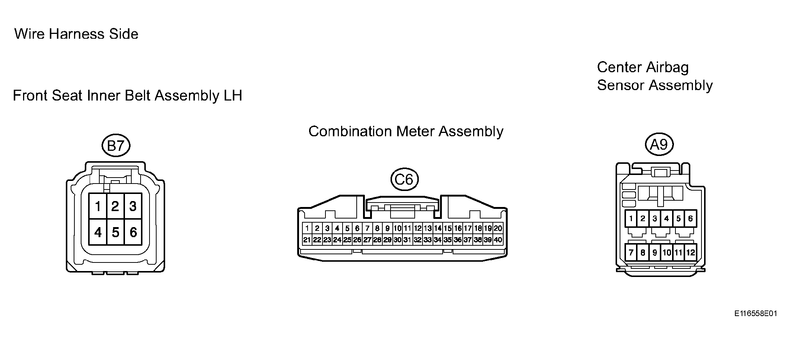

Inspection Procedure
- INSPECT FRONT SEAT INNER BELT ASSEMBLY LH (BUCKLE SWITCH LH)
- Disconnect the B7 belt connector.
- Measure the resistance of the connector.
Standard resistance
TESTER CONNECTION SPECIFIED CONDITIONTester Connection Switch Condition Specified Condition 1 - 3 Driver side seat belt is fastened (buckle switch ON) 1,200 to 1,460 Ω Driver side seat belt is unfastened (buckle switch OFF) 300 to 360 Ω
NG : REPLACE FRONT SEAT INNER BELT ASSEMBLY LH
OK : Go to Next Step
- CHECK WIRE HARNESS (SEAT INNER BELT - COMBINATION METER AND AIRBAG SENSOR)

Courtesy of © TOYOTA, LICENSE AGREEMENT TMS1002- Disconnect the B7 belt connector.
- Disconnect the C6 meter connector.
- Disconnect the A9 sensor connector.
- Measure the resistance of the connectors.
Standard resistance
TESTER CONNECTION SPECIFIED CONDITIONTester Connection Specified Condition B7-3 - C6-32 Below 1 Ω B7-1 - A9-7 - Disconnect the A9 sensor connector.
NG : REPAIR OR REPLACE HARNESS AND CONNECTOR
OK : REPLACE COMBINATION METER ASSEMBLY